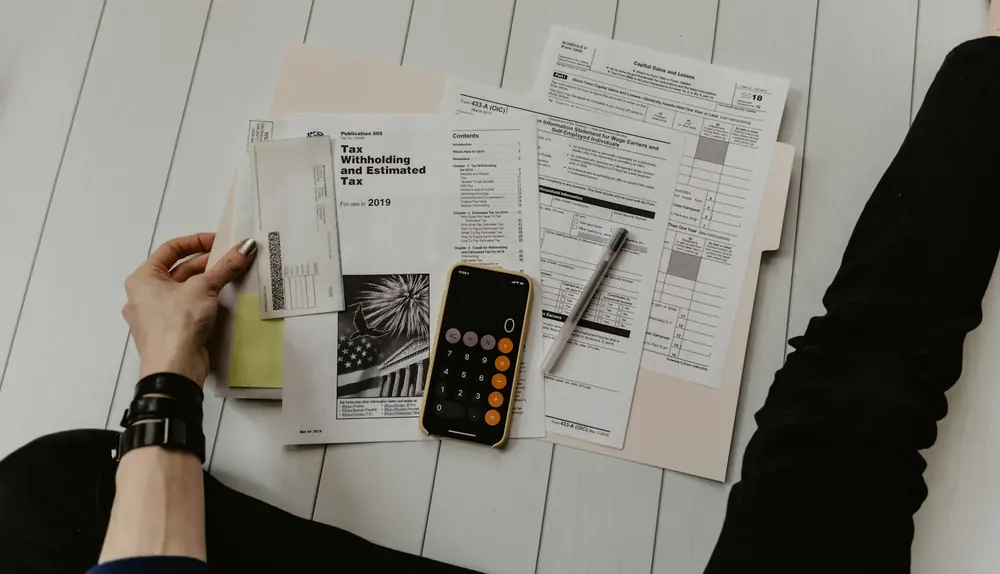
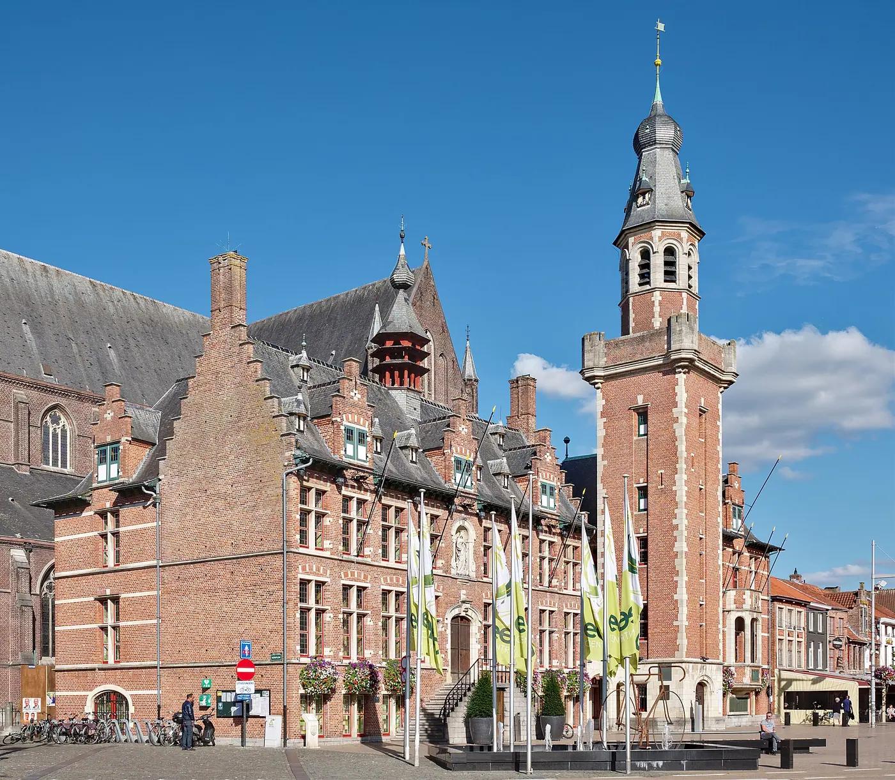
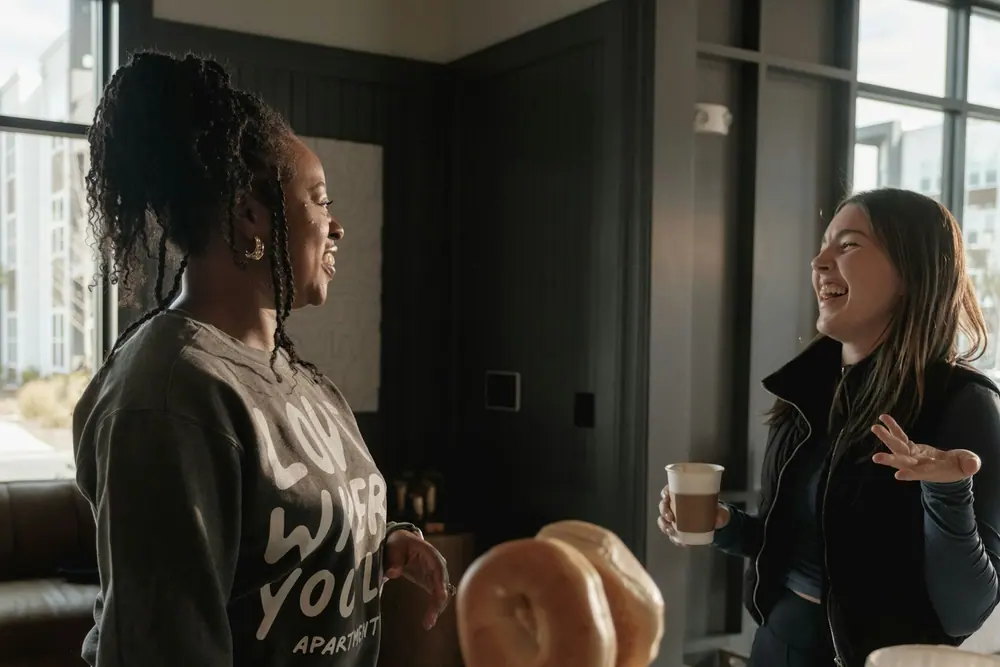
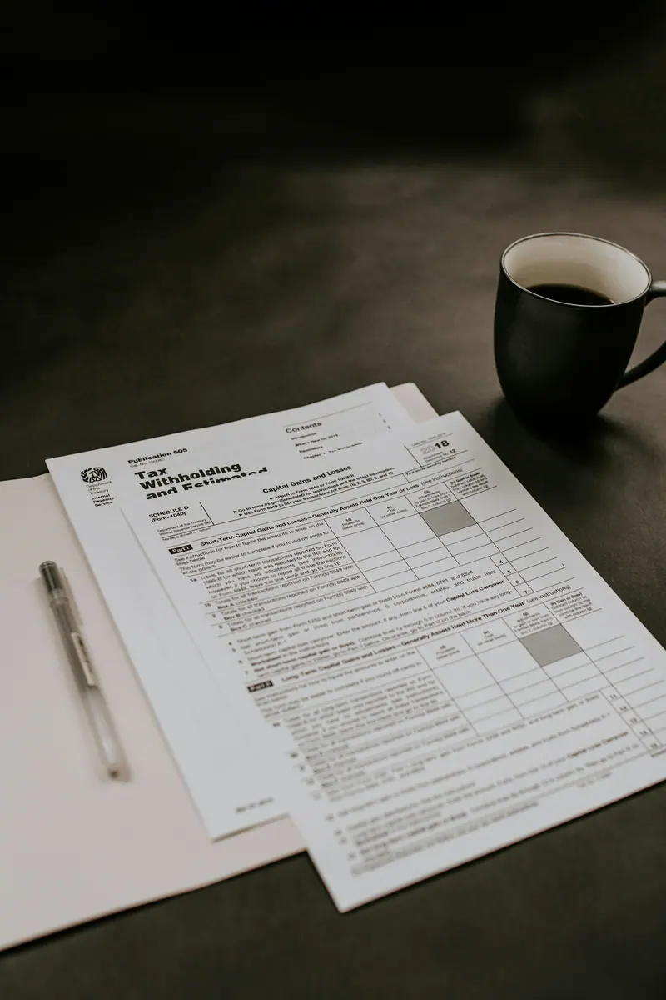
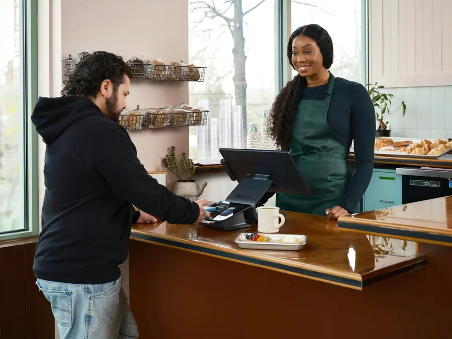
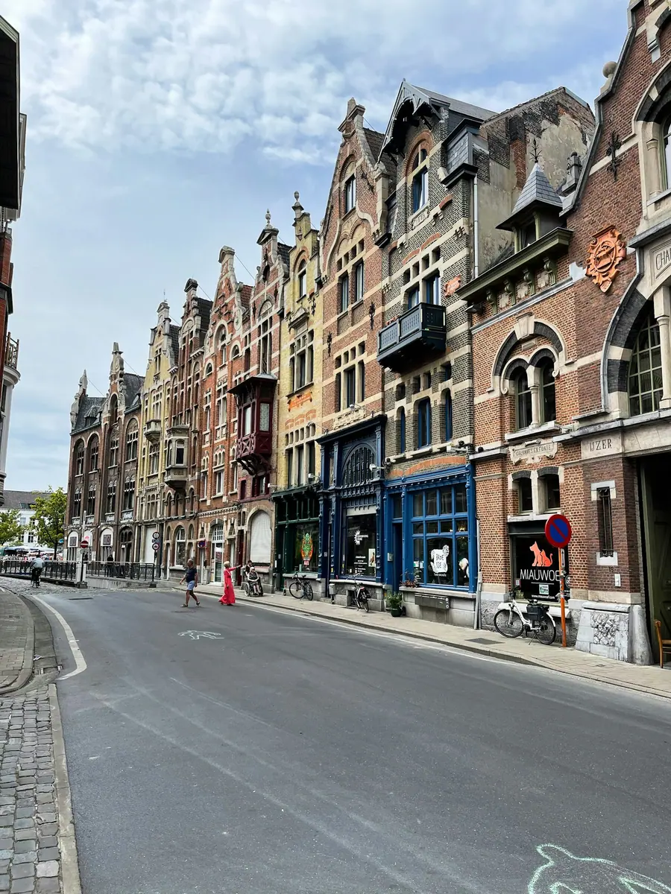

Zeelaan 2, Eeklo
Uw cijfers, persoonlijk opgevolgd in Eeklo.
Bij An Calsijn hebt u één accountant die uw dossier kent. Voor zelfstandigen, vennootschappen en particulieren uit Eeklo en de rest van het Meetjesland.
Eén vast aanspreekpuntKantoor in Eeklo

Accountantskantoor
LangskomenZeelaan 29900 Eeklo, op afspraak
Diensten
Alles voor uw boekhouding en aangiftes.
Van de eerste factuur tot de jaarrekening. U geeft de papieren door, An zorgt dat alles klopt en op tijd binnen is.

Uw jaar
Wat gebeurt er wanneer?
Een boekjaar heeft een vast ritme. Klik op een kwartaal en zie wat er dan gebeurt in uw dossier.

Over An
Een kantoor op mensenmaat.
An Calsijn begeleidt ondernemers en gezinnen uit Eeklo en omstreken. Geen groot kantoor met wisselende gezichten, wel één accountant die uw zaak en uw situatie kent.
Een vraag over een factuur, een brief van de fiscus of een plan voor volgend jaar? U belt, en u krijgt An aan de lijn.
Vast aanspreekpuntDuidelijke uitlegIn Eeklo
Voor wie
Voor wie in het Meetjesland onderneemt.
Elke klant heeft eigen vragen. Dit zijn de drie groepen die we het vaakst helpen.

Zelfstandigen
In hoofd- of bijberoep. Uw boekhouding en aangiftes op tijd en correct.

Vennootschappen
Jaarrekening, vennootschapsbelasting en advies voor uw BV.

Particulieren
Uw aangifte personenbelasting, ook met huur, lening of erfenis.
Langskomen
Aan de Zeelaan in Eeklo.
Het kantoor ligt aan de Zeelaan. Kom gerust langs, liefst op afspraak.
Eeklo
Contact
Bel, mail of laat uw gegevens achter.
Zeelaan 29900 Eeklo
09 335 34 18Op werkdagen
info@ancalsijn.beMail het kantoor
Vanuit de streek
Voor klanten uit Eeklo, Kaprijke, Maldegem, Assenede, Sint-Laureins en Waarschoot.
Route plannenVragen
Goed om te weten.
Kan ik ook als particulier bij u terecht?
Ja. Ook voor uw aangifte personenbelasting kan u bij het kantoor terecht, zeker als er een huurwoning, een lening of een erfenis bij komt kijken.
Hoe geef ik mijn papieren door?
Op kantoor, per mail of digitaal. We spreken af wat voor u het vlotst werkt.
Ik start in bijberoep. Wat moet ik regelen?
Een ondernemingsnummer, uw btw-situatie en een sociaal verzekeringsfonds, onder meer. We overlopen het samen voor u begint.
Kan ik overstappen van een andere boekhouder?
Ja. Het kantoor regelt de overdracht van uw dossier met uw vorige boekhouder.
Wat kost het?
Dat hangt af van uw dossier. Na een eerste gesprek krijgt u een duidelijk voorstel.
Contact
Een eerste gesprek is vrijblijvend.
09 335 34 18Bel het kantoor
info@ancalsijn.beMail An
Zeelaan 29900 Eeklo
Stuur een mail